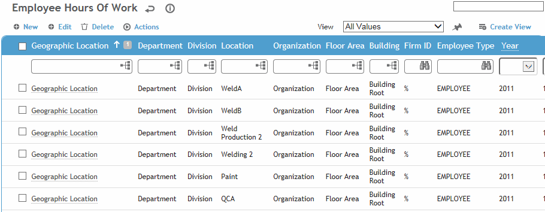
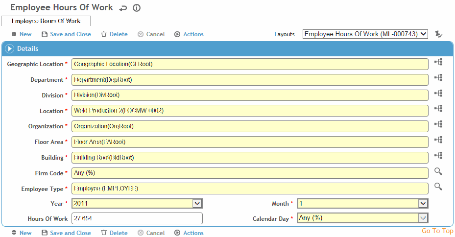

You would set up this table if you want to calculate the Severity or Frequency Rate. This information is also used in the Incident Rate reports and to calculate the OSHA recordable rate for US jurisdictions. This table is populated either by interface with a payroll or timekeeping system, or by manual entry.

Click on a link to edit a record, or click New to create a new record.

Select the Geographic Location, Department, Division, Location, Organization, Firm ID, Employee Type, Year, and Month.
To have picklists for this table only show values corresponding to the user’s geographic location, ensure the "Filter Look-up Tables by Geographic Location" system setting is enabled.
Enter the number of hours worked by employees in the parameters you have specified.
Click Save.